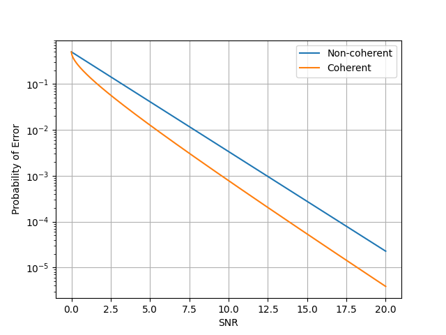

在前面几节的分析中，我们都假定了接收机和发射机之间是完美同步的 —— 某种意义上，我们的发射机在发送信号的一瞬间，接收机便收到了对应的信号 —— 此外，接收机的本地载波和发射机的载波也保持了完美的同步。显然，在实际环境里面这是不可能发生的。
# 非相干检测
我们考虑在实际环境中，接收机和发射机之间是存在一定的延迟td 的（不同步），也就是接收信号：
r(t)=sm(t−td)+n(t)
这使得我们的相干结果
⟨r(t),ϕ(t)⟩==∫0Tsm(t−td)ϕ(t)dt+∫0Tn(t)ϕ(t)dt∫0Tsm(t)ϕ(t)dt+∫0Tn(t)ϕ(t)dt
显然，这会导致我们的计算出现问题。一般来说，为了解决不同步的问题，我们有两个解决思路：
- 估计td，在解调时消除td 以便正常进行相干解调。
- 非相干检测。
这篇文章我们主要面向非相干检测的方式。我们现在使用θ 来描述不同步的状态：
r(t)=sm(t;θ)+n(t)
θ 作为一个随机变量，其表征了不同步的状态。依据我们已有的知识，非相干检测可以分为盲检测（不知道θ 的分布）和半盲检测（知道θ 的分布）。
# 未知时延情况下的非相干检测
那么，发射端和接收端的不同步到底导致了什么？我们考虑一个固定的时延td（在后面一些更加复杂的情况下，我们会遇到时变的时延和多个时延，那对传输系统是灾难性的破坏），那么对于信道上传输的带通信号sm(t)：
sm(t)=Re{sm,l(t)ej2πfct}
时延td 带来的延迟最后会表现在相位上，也就是：
r(t)====sm(t−td)+n(t)Re{sm,l(t−td)ej2πfct}+n(t)Re{[sm,l(t−td)e−j2πfctd+nl(t)]ej2πfct}Re{[sm,l(t−td)exp(jϕ(−2πfctd))+nl(t)]ej2πfct}
可以看到，时延td 最后会表现为在信号上增加了一个ϕ 的相位转动。我们不难意识到一个严重的问题，在现代通信中使用的高频载波下，即使是很短的时延带来的相位转动也是很严重的。例如 1ns 的时延，在 ISM 频段的 2.4GHz 载波下，td⋅fc 为 2.4，这个数量级是难以忽略的。此时我们不妨假设时延带来的转动角度是满足均匀分布的。
此外考虑到一般的通信环境下，时延td 相较于信号持续时间T 来说是非常小的，因此我们可以得到近似：
⟨sm,l(t−td),ϕi,l(t)⟩≈⟨sm,l(t),ϕi,l(t)⟩
即接收信号可以忽略掉sm,l(t−td) 中的td：
rl=ejϕsm,l+nl
在这样的情况下，我们考虑 MAP 接收：
m^==1≤m≤MargmaxPm∫02π2π1fn,l(rl−sm,lejϕ)dϕ1≤m≤Margmax2πPm(π2N0)N1∫02πexp−2N0∣∣rl−ejϕsm,l∣∣2dϕ
我们注意到右边积分内指数分子，对这个模的平方展开，得到：
∣∣rl−ejϕsm,l∣∣2=∣∣rl∣∣2+∣∣sm,l∣∣2−2∣∣rl∗sm,lejϕ∣∣
其中第二项，ejϕ 带来的旋转不会改变模长的平方，因而可以直接略去。对于展开的这三项，其中∣∣rl∣∣2 对argmax 没有影响（我们已经通过接收信号得到了它的取值，可以认为这是一个固定值），因而可以略去。而∣∣sm∣∣2 是2Em（注意这是等效低通的信号，同时这里是 MAP 接收，不一定满足等概的条件），和Pm 有关不能略去，但可以从积分中提出。这样，我们得到：
m^===1≤m≤MargmaxPme−N0Em∫02πeRe[rl∗sm,lejϕ]/N0dϕ1≤m≤MargmaxPme−N0Em∫02πeRe[∣rl∗sm,l∣ejθmejϕ]/N0dϕ1≤m≤MargmaxPme−N0Em∫02πeRe[∣rl∗sm,l∣cos(θm+ϕ)]/N0dϕ
在上面第一步中，我们将rl∗sm,l 写成极坐标的形式，其中坐标角∠(rl∗sm,l)=θm。得到上面最后的结果后，我们不难发现，积分部分满足 Modified Bessel 函数的结构：
I0(x)=2π1∫02πexcosϕdϕ
这样，我们得到：
m^==1≤m≤MargmaxPme−N0Em∫02πeN0∣rl∗sm,l∣cos(θm+ϕ)dϕ1≤m≤MargmaxPme−N0EmI0(N0∣rl∗sm,l∣)
在实践中，我们一般可以用多项式来拟合 Bessel 函数。
这样子，我们考虑 MAP 接收的判决函数：
gMAP(rl)=1≤m≤MargmaxPme−N0EmI(N0∣rl∗sm,l∣)
在各个发送符号等能量且等概的条件下，可以得到 ML 接收机的条件，也就是上式中仅剩下了 Bessel 函数：
gML(rl)=1≤m≤MargmaxI(N0∣rl∗sm,l∣)
实际上这里的I0 有一个很好的性质，也就是满足严格递增，这样子，可以进一步简化判断条件：
gML(rl)=1≤m≤Margmax∣rl∗sm,l∣=1≤m≤Margmax∫0T∣rl∗(t)sm,l(t)∣dt
也就是理想判断采用的是接收信号和发射信号内积的模，这个判断方式被称为包络检波 (envelope detector)。
提到包络检波的话，本科时候的那个非常凑合的通信原理实际上也提到了这个方法，一般是用在 PAM 信号的解调时候，最主要的优势也就是成本低廉，只需要非常简单的电路便可以实现。
# 正交信号的非相干检测
下面考虑一个特殊的例子，也就是正交信号的非相干检测。假设一个M 维信号，各个发送符号：
s1,l=s2,l=⋮sM,l=(2Es,0,⋯,0)T(0,2Es,⋯,0)T(0,0,⋯,2Es)T
不妨假设发送了信号s1,l，接收端得到了信号为rl，那么我们能够得到 ML 接收机判断：
∣sm,l∗⋅rl∣={∣2Esejϕ−s1,l∗nl∣,∣sm,l∗nl∣,m=1m=1
这里的噪声nl 为 I、Q 轴都满足 Gaussian 分布的随机变量，因而有：
E[nl∗nl]=2N0
那么sm,l∗nl 也满足 I、Q 轴均是 Gaussian 分布（说白了就是个复 Gaussian 分布），更进一步的，sm,l∗rl 也是一个复 Gaussian 分布。
我们能够发现，sm,l∗rl 的分布满足两种情况，对于m=1，s1,l∗rl=2Esejϕ−s1,l∗nl，其实部和虚部分别满足均值不为 0 的 Gaussian 分布：
Re[s1,l∗rl]∼N(2Escosϕ,2EsN0)Im[s1,l∗rl]∼N(2Essinϕ,2EsN0)
而对于m=1，sm,l∗rl=sm,l∗nl，其实部和虚部分别满足均值为 0 的 Gaussian 分布：
Re[sm,l∗rl]∼N(0,2EsN0)Im[sm,l∗rl]∼N(0,2EsN0)
这样子，其模长根据m=1 与否，满足两个不同的分布。当m=1，∣s1,l∗rl∣ 为两个均值不为 0 的 Gaussian 分布的组合，记R1=s1,l∗rl，其取值满足 Rice 分布：
fR1=σr1I0(σ2sr1)e2σ2r12+s2,r1>0
其中σ2=2EsN0，s=2Es。
当m=1 时情况相对简单一些，∣sm,l∗rl∣ 为两个均值为 0 的 Gaussian 分布的组合（满足独立同分布了），记Rm=sm,l∗rl，其取值满足 Rayleigh 分布：
fRm=σ2rme−2σ2rm2,rm>0
其中σ2=2EsN0。
这样我们可以计算 ML 接收机的正确率就是argmax 选择m^=1 的概率，即∣s1,l∗rl∣ 为最大的概率：
Pc=Pr{R2<R1,R3<R1,⋯,RM<R1}
此时，由于R1 为一个随机变量，因此概率分布中各个子事件不满足独立性，故考虑将其作为给定条件，即：
Pc==∫0∞Pr{R2<r1,R3<r1,⋯,RM<r1∣R1=r1}f(r1)dr1∫0∞[∫0r1f(rm)drm]M−1f(r1)dr1
当概率中各个子事件独立，可以用累乘的方法将其简化，得到上面第二步的结果，也就是需要求 Rayleigh 分布的变量取值小于r1 的概率，对 Rayleigh 分布的 PDF 函数进行积分，得到：
Pc=∫0∞[1−e−2σ2r12]M−1f(r1)dr1
利用二项分布公式展开积分中的指数部分，得到：
Pc=∫0∞n=0∑M−1(M−1n)(−1)ne−2σ2nr12f(r1)dr1
展开 Rice 分布的 PDF，能够得到：
Pc=∫0∞n=0∑M−1(M−1n)(−1)ne−2σ2nr12σr1I0(σ2sr)e−2σ2r12+s2dr1
注意到求和函数部分和r1 关系并不大，对调积分和求和函数的顺序，得到：
Pc=n=0∑M−1(M−1n)(−1)n∫0∞σr1I0(σ2sr)e−2σ2(n+1)r12+s2dr1
此时，我们得到了一个还是比较棘手的积分，工程上 Bessel 函数的计算可以通过多项式拟合或者查表来完成，但是在这个积分中使用这些办法带来的误差将会是十分严重的，因此我们应该考虑一些更好的办法来解决这个问题。
我们观察这个积分内部的形式，能够注意到，它长得和 Rice 分布的 PDF 有些类似，因此我们考虑能否将其转换为 Rice 分布进行积分。
注意到我们可以令s′=s/n+1，r′=r1n+1，带入可以得到：
====∫0∞σr1I0(σ2sr)e−2σ2(n+1)r12+s2dr1∫0∞σ(n+1)r′I(σ2s′r′)e−2σ2r′2+(n+1)s′2dr′n+11e−2σ2ns′2∫0∞σr′I0(σ2s′r′)e−2σ2r′2+s′2dr′n+11e−2σ2ns′2n+11e−2σ2(n+1)ns2
我们发现右边的积分部分现在满足 Rice 分布从0 到∞ 的积分，这部分的值就是1，扔回去，我们就得到：
Pc==n=0∑M−1n+1(−1)n(M−1n)e−2σ2(n+1)ns21+n=0∑M−1n+1(−1)n(M−1n)e−n+1nN0Es
相应的，我们能够得到错误率：
Pe=1−Pc=n=0∑M−1n+1(−1)n+1(M−1n)e−n+1nN0Es
怎么说呢，我们选择一些特定的参数，例如 M=2 的时候，比较一下相干和非相干解调的性能差距：

两者还是有比较明显的差距的，非相干解调的错误概率明显要高于相干解调的情况，不过这也是意料之中的，毕竟成本更低，实现也更加简单。
# 差分 PSK 信号的接收
首先，为什么要谈及差分 PSK 信号？
在非相干的情况下，时延导致的星座图旋转已经使得我们正常的 PSK 解调方法不可信了 —— 信号的相位已经不知道被旋转到哪里去了，简简单单的通过绝对相位来进行判断是难以解决问题的。
差分显然是一个很好的解决办法 —— 星座图尽管旋转得非常严重，但前后符号之间的相对相位是不会改变的，通过将绝对相位改为相对相位，我们能够有效避免这个问题。
不过呢，解决了一个问题自然会带来其他的新问题，一方面差分信号带来了系统实现上的复杂度，另一方面，差分信号会引入错误传播的问题 —— 当前一个符号发生了错误，其不可避免地会影响到下一个符号的判断。